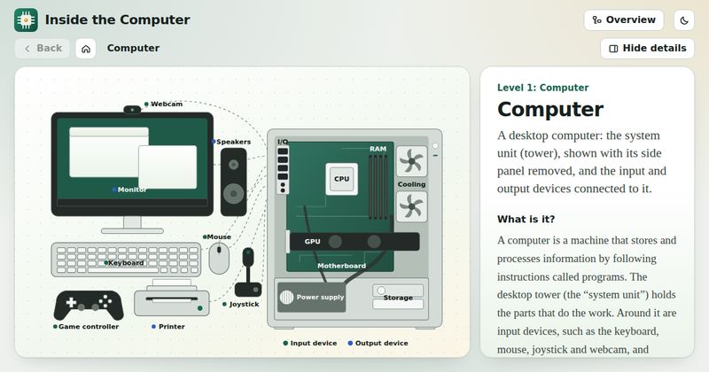

Digital Logic Design
Thirteen topics, each one a short slide deck with worked examples, truth tables, interactive demos, practice and a quiz.
Start with topic 1Practice drillsQuick referenceProjectsGate Forge Gate ForgeA free circuit simulator — place and wire gates, generate truth tables and timing diagrams, and work through 90+ guided problems.
Gate ForgeA free circuit simulator — place and wire gates, generate truth tables and timing diagrams, and work through 90+ guided problems.
Gate ForgeA free circuit simulator — place and wire gates, generate truth tables and timing diagrams, and work through 90+ guided problems.Inside a topic: ← → or Space to move, F for full screen, M for the slide list.
- 1Introduction to Digital LogicWhat a digital system is, why it uses only 0 and 1, and how simple gates grow into a computer.17 slides · Analog vs. digital signal visualization
- 2Number Systems & Binary CodesPositional number systems, base conversion, signed numbers, BCD and Gray code.26 slides · Base-conversion calculator
- 3Boolean Algebra & Logic GatesThe algebra behind every circuit: laws, DeMorgan, gates, minterms and canonical forms.33 slides · Boolean expression simplifier
- 4Universal Gates & Karnaugh MapsBuild anything from NAND or NOR, then simplify functions visually with Karnaugh maps.21 slides · Interactive 2/3/4-variable K-map
- 5Combinational Logic & Arithmetic CircuitsAdders, subtractors, BCD adders and comparators: the arithmetic inside every ALU.27 slides · Interactive adders and subtractors
- 6Decoders, Encoders & Data SelectorsCircuits that route and select data: decoders, encoders, multiplexers and demultiplexers.19 slides · Select-line simulation
- 7Sequential Logic: Latches & Flip-FlopsMemory for digital circuits: clocks, latches, flip-flops and the timing rules they obey.23 slides · Clock and timing-diagram simulator
- 8State Machines & Sequential Circuit DesignDescribe behaviour as states and transitions, reduce it, and turn it into flip-flops and gates.18 slides · State-diagram simulator
- 9CountersRipple, synchronous, up/down, MOD-N, ring and Johnson counters, and frequency division.27 slides · Live counter and clock simulation
- 10RegistersGroups of flip-flops that store and move data: parallel load, shift registers and register transfer.16 slides · Bit-shifting simulator
- 11Memory & Error CorrectionHow memory is organised, decoded and expanded, and how errors are detected and corrected.17 slides · Address/data read-write simulation
- 12ROM & Programmable LogicROM as a lookup table, then PLA and PAL: configurable AND and OR arrays.17 slides · Programmable-logic simulation
- 13Digital Systems & PracticePut the blocks together: a small ALU, a traffic light, a digital lock, and design workflows.16 slides · Complete mini digital systems
More tools to explore
Two companion tools built to go with this course — open either one in a new tab.
Gate Forge
A circuit simulator: place and wire gates, generate truth tables and timing diagrams, and work through guided problems.
Open Gate Forge ↗
Inside the Computer
An interactive diagram of a computer: click any part, from the case down to the CPU and RAM, to see what it does.
Open Inside the Computer ↗